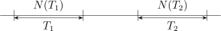

Chapter 4
Stochastic Process with Continuous Time
Consider an event which occurs at random in time.
Let \(N(t)\) denote the number of events which occurred in time interval \((0,t]\). Then the stochastic process \(\{N(t), \, t\geq 0\}\) is
called a counting process.
A counting process \(\{N(t),\, t\geq 0\}\) satisfies the following properties
- (i)
- \(N(t) \geq 0\)
- (ii)
- \(N(t)\) assumes non negative integer values
- (iii)
- If \(s < t\) then \(N(s) \leq N(t)\)
- (iv)
- For \(s < t, \, N(t) - N(s)\) represents events which occurred in the interval \((s,t)\).
Stochastic process with continuous \(T\) is not always a counting process.
Independent Increments: A counting process is said to posses independent increments if the number of events that occur in non overlapping intervals are independent

\(N(T_1)\) and \(N(T_2)\) are independent random variables.
Stationary Increments: A counting process is said to have stationary increments if the number of events occurring in time interval \((s, s + t)\) does not depend on \(s\) but only on length of interval \((t)\).
Definition 4.0.1. A function \(f(\cdot )\) is said to be of (order of \(h\)) \(O(h)\) if \[\lim _{h\rightarrow 0} \frac {f(h)}{h} = 0.\]
e.g \(f(x) = x\) (not \(O(h)\)). \(f(x) = x^2\) (of \(O(h)\)).